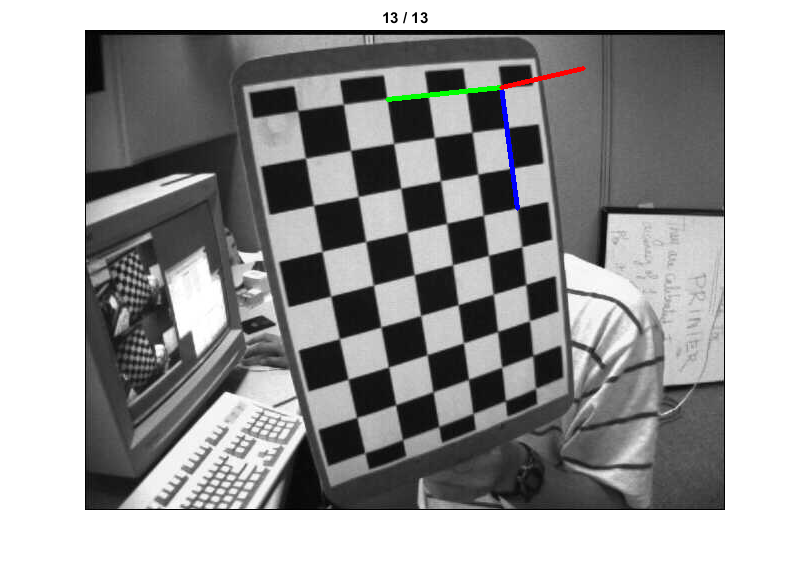
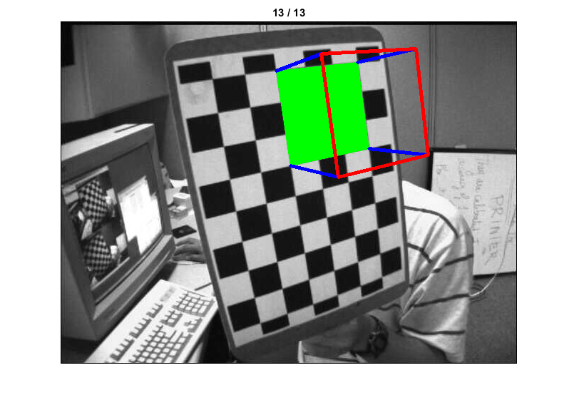

Pose Estimation
In this sample, we learn to exploit calib3d module to create some 3D effects in images from a calibrated camera.
Sources:
In the camera calibration demo, we have found the camera matrix, distortion coefficients etc. Given a pattern image, we can utilize the above information to calculate its pose, or how the object is situated in space, like how it is rotated, how it is displaced etc. For a planar object, we can assume Z=0, such that, the problem now becomes how camera is placed in space to see our pattern image. So, if we know how the object lies in the space, we can draw some 2D diagrams in it to simulate the 3D effect.
Our problem is, we want to draw our 3D coordinate axis (X, Y, Z axes) on our chessboard's first corner. X axis in blue color, Y axis in green color and Z axis in red color. So in-effect, Z axis should feel like it is perpendicular to our chessboard plane.
First, let's load the camera matrix and distortion coefficients from the previous calibration result.
fname = fullfile(tempdir(), 'calibration_chessboard.yml'); assert(exist(fname, 'file') == 2, ... 'calibration result not found, run calibration_demo.m first'); fs = cv.FileStorage(fname); display(fs)
fs =
struct with fields:
calibration_time: '01-Dec-2017 02:06:20'
image_width: 640
image_height: 480
board_width: 9
board_height: 6
square_size: 30
aspectRatio: 1
flags: [1×1 struct]
camera_matrix: [3×3 double]
distortion_coefficients: [-0.2664 -0.0386 0.0018 -2.8122e-04 0.2384]
Then as in previous case, we create object points (planar 3D points of chessboard corners)
[X,Y] = ndgrid(1:fs.board_width, 1:fs.board_height); objPts = ([X(:), Y(:)] - 1) * fs.square_size; objPts(:,3) = 0;
Create axis points. Axis points are points in 3D space for drawing the axis. We draw axis of length 3 (units will be in terms of chess square size since we calibrated based on that size). So our X axis is drawn from (0,0,0) to (3,0,0), so for Y axis. For Z axis, it is drawn from (0,0,0) to (0,0,-3). Negative denotes it is drawn towards the camera.
p3d = [3 0 0; 0 3 0; 0 0 -3] * fs.square_size;
Now, as usual, we loop over each image
files = cv.glob(fullfile(mexopencv.root(), 'test', 'left*.jpg')); N = numel(files); for i=1:N % load image img = cv.imread(files{i}, 'Color',true); % search for 9x6 grid [imgPts, found] = cv.findChessboardCorners(img, ... [fs.board_width, fs.board_height]); imgPts = cat(1, imgPts{:}); if found % if found, refine it with subcorner pixels. gray = cv.cvtColor(img, 'RGB2GRAY'); imgPts = cv.cornerSubPix(gray, imgPts, 'WinSize',[11 11], ... 'Criteria',struct('type','Count+EPS', 'maxCount',30, 'epsilon',0.1)); end % calculate the rotation and translation vectors [rvecs, tvecs] = cv.solvePnP(objPts, imgPts, fs.camera_matrix, ... 'DistCoeffs',fs.distortion_coefficients); % use transformation matrices to project "axis points" to the image plane. % In simple words, we find the points on image plane corresponding to each % of (3,0,0),(0,3,0),(0,0,3) in 3D space. p2d = cv.projectPoints(p3d, rvecs, tvecs, fs.camera_matrix, ... 'DistCoeffs',fs.distortion_coefficients); % draw lines from the first corner to each of projected axis points. % Notice that each axis is 3 squares long. clrs = [0 0 1 0; 0 1 0 0; 1 0 0 0] * 255; img = cv.line(img, imgPts([1 1 1],:), p2d, 'Colors',clrs, 'Thickness',3); imshow(img), title(sprintf('%02d / %02d', i, N)) pause(1) end
We can also modify the axis points above to draw a cube instead of axis vectors. We draw ground floor in green, pillars in blue, top layer in red.
This can be extended to render more complicated objects such as for augmented reality applications.
p3d = [0 0 0; 0 3 0; 3 3 0; 3 0 0;
0 0 -3; 0 3 -3; 3 3 -3; 3 0 -3] * fs.square_size;
p2d = cv.projectPoints(p3d, rvecs, tvecs, fs.camera_matrix, ...
'DistCoeffs',fs.distortion_coefficients);
img = cv.imread(files{N}, 'Color',true);
img = cv.drawContours(img, p2d(1:4,:), 'Color',[0 255 0], 'Thickness','Filled');
img = cv.line(img, p2d(1:4,:), p2d(5:8,:), 'Color',[0 0 255], 'Thickness',3);
img = cv.drawContours(img, p2d(5:8,:), 'Color',[255 0 0], 'Thickness',3);
figure, imshow(img), title(sprintf('%02d / %02d', N, N))